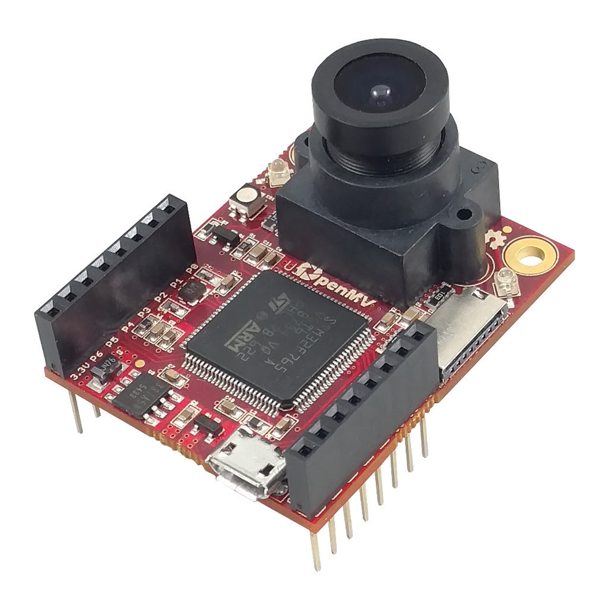

OpenMV Cam M7¶
إن OpenMV Cam M7 هي لوحة رؤية آلية من فئة Cortex‑M7 مبنية حول معالج STMicroelectronics STM32F765 بتردد 216 MHz مع 512 KB من ذاكرة SRAM الداخلية و2 MB من ذاكرة الفلاش الداخلية. يلتقط المستشعر المرفق OV7725 إطارات بتدرج الرمادي بدقة 640×480 أو إطارات RGB565 بدقة 320×240 بمعدل يصل إلى 150 FPS، ويوفر رأس المستخدم ذو الـ 10 دبابيس طرفيات UART وI²C وSPI وCAN وADC/DAC وPWM.
{kind=link}

للاطلاع على ورقة البيانات الكاملة والصور والأبعاد راجع صفحة منتج OpenMV Cam M7.
أبرز الميزات¶
STMicroelectronics STM32F765 من فئة Cortex‑M7 بتردد 216 MHz.
512 KB من ذاكرة SRAM الداخلية — بدون ذاكرة SDRAM خارجية.
2 MB من ذاكرة الفلاش الداخلية (بدون ذاكرة فلاش QSPI خارجية).
مستشعر OV7725 — بتدرج الرمادي بدقة 640×480 أو RGB565 بدقة 320×240 بمعدل يصل إلى 150 FPS.
USB بالسرعة الكاملة (12 Mb/s) — يظهر كـ VCP إضافة إلى وحدة تخزين USB كبيرة السعة لدى المضيف.
مقبس microSD — بطاقات SD حتى 2 GB، وSDHC حتى 32 GB، وSDXC حتى 2 TB.
10 دبابيس إدخال/إخراج، تتحمل 5 V مع خرج 3.3 V، و25 mA لكل دبوس (120 mA إجمالاً عبر الرأس)، وقادرة على المقاطعة. الدبوس P6 لا يتحمل 5 V عند استخدامه في وضع ADC أو DAC.
مؤشر RGB LED للمستخدم ومصباحان IR LED عاليا الطاقة بطول موجي 850 nm للإضاءة النشطة في الرؤية ضمن الإضاءة المنخفضة.
ملاحظة
لا تحتوي M7 على شريحة إدارة طاقة على اللوحة: فلا يوجد موصل بطارية، ولا شاحن بطارية، ولا ADC لقياس جهد البطارية، ولا مؤشرات LED لحالة الشحن/الطاقة، ولا زر طاقة عتادي. ادعم اللوحة عبر USB أو VIN.
مخطط الدبابيس¶

مرجع الدبابيس¶
اسم الدبوس |
الوظيفة |
|---|---|
P0 |
UART1 RX / SPI2 MOSI |
P1 |
UART1 TX / SPI2 MISO |
P2 |
SPI2 SCK / CAN2 TX |
P3 |
SPI2 NSS (CS) / CAN2 RX |
P4 |
I2C2 SCL / UART3 TX / TIM2 CH3 |
P5 |
I2C2 SDA / UART3 RX / TIM2 CH4 |
P6 |
ADC / DAC / TIM2 CH1 |
P7 |
I2C4 SCL / TIM4 CH1 |
P8 |
I2C4 SDA / TIM4 CH2 |
P9 |
TIM4 CH3 |
RESET |
اربطه بـ GND لإعادة ضبط اللوحة |
SYN |
وصلة مزامنة الإطارات — موصولة بمستشعر الكاميرا فقط |
BOOT0 |
اربطه بـ 3.3 V عند التشغيل للدخول في وضع DFU / محمّل الإقلاع ROM |
LED_RED |
القناة الحمراء لمؤشر RGB LED (فعّالة عند المستوى المنخفض) |
LED_GREEN |
القناة الخضراء لمؤشر RGB LED (فعّالة عند المستوى المنخفض) |
LED_BLUE |
القناة الزرقاء لمؤشر RGB LED (فعّالة عند المستوى المنخفض) |
LED_IR |
مصابيح IR LED عالية الطاقة (يتم تشغيل كلتا القناتين معاً) |
ملاحظة
إن وصلة SYN الموجودة على الرأس موصولة مباشرة بخط الإطلاق/التعريض لمستشعر الكاميرا — وهي لا تتصل بالـ MCU على M7. شغّلها أو اقرأها خارجياً؛ لا يمكنك تبديلها من MicroPython.
دبابيس الطاقة¶
3.3V — خط 3.3 V منظَّم. يتوفر ما يصل إلى 250 mA للدروع (أقل إذا كانت بطاقة microSD قيد الاستخدام). على عكس الكاميرات الأحدث، هذا الدبوس ثنائي الاتجاه — راجع التحذير أدناه.
VIN — دخل 3.6 – 5 V. يغذي اللوحة عبر المنظِّم الموجود على اللوحة.
GND — الأرضي المشترك.
ملاحظة
عند وجود كل من USB وVIN، فإن أيهما يحمل الجهد الأعلى يغذي اللوحة — تختار الثنائيات الموجودة على اللوحة الخط الأقوى ببساطة.
تحذير
يمكنك تغذية M7 بإدخال 3.3 V مباشرة إلى الدبوس 3.3V إذا لم ترغب في المرور عبر المنظِّم الموجود على اللوحة. في هذه الحالة، لا تطبّق أيضاً طاقة VIN أو USB في الوقت نفسه — إذ إن الدفع العكسي للمنظِّم بينما يكون مصدر آخر نشطاً قد يتلف الكاميرا ويدمرها بشكل دائم.
نصيحة
استخدم أداة تقدير عمر البطارية لنمذجة المدة التي ستعمل خلالها M7 على بطارية ما عند دورة عمل معينة من النشاط/السبات العميق.
دبابيس الاسترداد والتصحيح¶
RESET — اربطه بـ GND لإعادة ضبط اللوحة. يؤدي تحريره إلى السماح للـ MCU بالإقلاع بشكل طبيعي.
BOOT0 — اربطه بـ 3.3 V أثناء تشغيل اللوحة للدخول في محمّل الإقلاع ROM الخاص بـ STM32 (وضع DFU). يستخدم OpenMV IDE هذا الوضع لإعادة وميض محمّل الإقلاع الموجود على اللوحة.
توفر اللوحة رأس تصحيح SWD (RST / SWCLK / SWDIO) بجانب رأس GPIO، وهو متوافق مع محولات ST‑LINK وSEGGER J‑Link.
الطرفيات الموجودة على اللوحة¶
مؤشرات LED¶
تحتوي M7 على مؤشر RGB LED مفرد للمستخدم إضافة إلى زوج من مصابيح IR LED عالية الطاقة بطول موجي 850 nm:
مؤشر RGB LED للمستخدم — قابل للتحكم برمجياً، ويظهر بصيغة
LED_REDوLED_GREENوLED_BLUEfrom machine import LED LED("LED_RED").on() LED("LED_GREEN").on() LED("LED_BLUE").on()
مصابيح IR LED — يتم تشغيل كلا المصباحين معاً عبر الدبوس
LED_IR. وقد جرى توصيلLED_IRليكون فعّالاً عند المستوى المرتفع في العتاد بينما يتعامل البرنامج الثابت مع كل مؤشر LED آخر على اللوحة على أنه فعّال عند المستوى المنخفض، لذا استخدمlow()/high()بدلاً منon()/off()(اللذين سيعكسان المنطق):from machine import LED ir = LED("LED_IR") ir.low() # turn IR illumination ON ir.high() # turn IR illumination OFF
مستشعر الكاميرا¶
يتم تشغيل OV7725 عبر الوحدة csi --- مستشعرات الكاميرا
import csi
cam = csi.CSI()
cam.reset()
cam.pixformat(csi.RGB565)
cam.framesize(csi.QVGA)
cam.snapshot(time=2000) # let auto‑exposure settle
while True:
img = cam.snapshot()
المستشعر ملحوم باللوحة على M7 — وهو ليس على وحدة قابلة للتبديل.
بطاقة microSD¶
عند إدخال بطاقة يتم تركيبها تلقائياً عند /sdcard وتصبح قابلة للاستخدام عبر نظام الملفات العادي:
import os
for entry in os.listdir("/sdcard"):
print(entry)
مرجع الناقل¶
GPIO¶
استخدم machine.Pin لقراءة أو تشغيل أي من الدبابيس المطبوعة بالشاشة الحريرية. تكون المخارج بمنطق CMOS عند 3.3 V، وتتحمل 5 V في جانب الدخل، ويمكنها تصريف/توريد ما يصل إلى 25 mA لكل دبوس (120 mA إجمالاً عبر الرأس بأكمله).
from machine import Pin
out = Pin("P0", Pin.OUT)
out.on()
out.off()
out.value(1)
inp = Pin("P1", Pin.IN, Pin.PULL_UP)
print(inp.value())
يمكن لأي دبوس دخل أيضاً إطلاق مقاطعة عند انتقالات الحافة:
def handler(pin):
print("triggered:", pin)
Pin("P1", Pin.IN, Pin.PULL_UP).irq(
handler, Pin.IRQ_FALLING | Pin.IRQ_RISING,
)
UART¶
الناقل |
TX |
RX |
|---|---|---|
UART1 |
P1 |
P0 |
UART3 |
P4 |
P5 |
from machine import UART
uart = UART(3, baudrate=115200)
uart.write("hello")
uart.read(5)
I²C¶
الناقل |
SCL |
SDA |
|---|---|---|
I2C2 |
P4 |
P5 |
I2C4 |
P7 |
P8 |
from machine import I2C
i2c = I2C(2, freq=400_000)
i2c.scan()
i2c.writeto(0x76, b"hi")
يمكن أيضاً استخدام العتاد نفسه في وضع الهدف (التابع) عبر machine.I2CTarget لكشف منطقة ذاكرة لمتحكم I²C آخر:
from machine import I2CTarget
buf = bytearray(32)
target = I2CTarget(2, addr=0x42, mem=buf)
SPI¶
الناقل |
MOSI |
MISO |
SCK |
CS |
|---|---|---|---|---|
SPI2 |
P0 |
P1 |
P2 |
P3 |
from machine import SPI
from machine import Pin
spi = SPI(2, baudrate=10_000_000)
cs = Pin("P3", Pin.OUT, value=1) # CS is not driven by the SPI peripheral
cs.value(0)
spi.write(b"hello")
cs.value(1)
CAN¶
الناقل |
TX |
RX |
|---|---|---|
CAN2 |
P2 |
P3 |
from machine import CAN
can = CAN(2, 500_000)
can.set_filters(None)
can.send(0x123, b"\xDE\xAD\xBE\xEF")
print(can.recv())
ADC وDAC¶
الدبوس P6 هو دبوس المستخدم التناظري الوحيد. يمكن استخدامه إما كدخل ADC بدقة 12 بت أو كخرج DAC.
ADC — المقياس الكامل عند 3.3 V على الدبوس:
from machine import ADC import time adc = ADC("P6") while True: voltage = adc.read_u16() * 3.3 / 65535 print(voltage) time.sleep_ms(100)
DAC — عبر
pyb.DAC. تغطي القيمة ذات الـ 8 بت المدى 0–3.3 V:from pyb import DAC dac = DAC("P6") voltage = 1.65 dac.write(int(voltage / 3.3 * 255))
في وضع ADC أو DAC يكون الدبوس P6 متحملاً لـ 3.3 V فقط — لا تغذّه بـ 5 V.
PWM¶
الدبوس |
المؤقت / القناة |
|---|---|
P4 |
TIM2 CH3 |
P5 |
TIM2 CH4 |
P6 |
TIM2 CH1 |
P7 |
TIM4 CH1 |
P8 |
TIM4 CH2 |
P9 |
TIM4 CH3 |
ملاحظة
المؤقت TIM1 محجوز من قبل البرنامج الثابت لتوليد ساعة البكسل لمستشعر الكاميرا، لذا فإن قنوات TIM1 الموجودة فعلياً على P0/P1/P2 لا يمكن استخدامها لـ PWM الخاص بالمستخدم دون تعطيل الكاميرا.
المؤقت TIM4 مشترك مع pyb.Servo — إذ إن إنشاء محرك سيرفو يعيد ضبط المؤقت بأكمله للعمل عند 50 Hz، لذا لا تخلط بين machine.PWM على P7/P8/P9 وpyb.Servo في البرنامج النصي نفسه.
شغّل أياً منها عبر machine.PWM
from machine import Pin, PWM
pwm = PWM(Pin("P7"), freq=1_000, duty_u16=32768)
النواقل البرمجية بطريقة bit‑banging¶
يعمل كل من machine.SoftI2C وmachine.SoftSPI على أي دبوس GPIO إذا احتجت إلى ناقل إضافي.
المستشعر الحراري (خارج اللوحة)¶
يتضمن البرنامج الثابت برنامج التشغيل fir --- مشغّل المستشعر الحراري (fir == far infrared) لمصوّرات حرارية موصولة خارجياً:
MLX90621 — مصفوفة IR بحجم 16 × 4
MLX90640 — مصفوفة IR بحجم 32 × 24
MLX90641 — مصفوفة IR بحجم 16 × 12
AMG8833 — مصفوفة IR بحجم 8 × 8
وصّل الوحدة بناقل I²C الخاص باللوحة واقرأ الإطارات باستخدام fir.init() + fir.snapshot()
import time
import image
import fir
fir.init() # auto‑detects the sensor
clock = time.clock()
while True:
clock.tick()
try:
img = fir.snapshot(x_scale=5, y_scale=5,
color_palette=image.PALETTE_IRONBOW,
hint=image.BICUBIC,
copy_to_fb=True)
except OSError:
continue
print(clock.fps())
يتواصل برنامج التشغيل fir مع المستشعر عبر I²C 2 فقط — وصّل الوحدة بـ P4 (SCL) وP5 (SDA).
التوقيت¶
time¶
تغطي الوحدة time التأخيرات الحاجزة والنبضات الرتيبة وقياس الزمن المنقضي:
import time
time.sleep(1) # seconds
time.sleep_ms(500)
time.sleep_us(10)
start = time.ticks_ms()
# ...do work...
elapsed = time.ticks_diff(time.ticks_ms(), start)
المؤقتات الافتراضية¶
يجدول machine.Timer دوال رد النداء الدورية أو ذات اللقطة الواحدة دون استهلاك خانة مؤقت عتادي. مرّر -1 كمعرّف لاستخدام مؤقت افتراضي (برمجي):
from machine import Timer
one_shot = Timer(-1)
one_shot.init(period=5_000, mode=Timer.ONE_SHOT,
callback=lambda t: print("once"))
periodic = Timer(-1)
periodic.init(period=2_000, mode=Timer.PERIODIC,
callback=lambda t: print("tick"))
قيم الفترة بالميلي ثانية. استدعِ deinit() لإيقاف الخانة وتحريرها.
ساعة الوقت الحقيقي¶
يحافظ machine.RTC على توقيت ساعة الحائط عبر عمليات إعادة الضبط:
from machine import RTC
rtc = RTC()
rtc.datetime((2026, 4, 30, 4, 12, 0, 0, 0)) # Y, M, D, weekday, h, m, s, subsec
print(rtc.datetime())
كلب المراقبة (Watchdog)¶
يعيد machine.WDT ضبط اللوحة إذا تعلّق التطبيق. وبمجرد بدء تشغيله لا يمكن إيقافه أو إعادة تهيئته — أطعمه دورياً داخل حلقتك الرئيسية:
from machine import WDT
wdt = WDT(timeout=5_000) # 5 second window
while True:
# ...do work...
wdt.feed()
معلومات الإقلاع ووقت التشغيل¶
نافذة محمّل الإقلاع عبر USB¶
عند كل عملية تشغيل تقوم الكاميرا بتشغيل محمّل إقلاع قصير (بضع ثوانٍ) يتيح لـ OpenMV IDE تحديث البرنامج الثابت دون أن يضطر المستخدم للدخول في وضع DFU. وبعد انتهاء النافذة يسلّم محمّل الإقلاع المهمة إلى boot.py ثم main.py.
يمكن لبرنامج نصي قيد التشغيل إعادة الدخول إلى محمّل الإقلاع عند الطلب باستدعاء machine.bootloader()
import machine
machine.bootloader()
نظام الملفات وترتيب الإقلاع¶
يركّب البرنامج الثابت لـ M7 ما يصل إلى ثلاثة أنظمة ملفات عند الإقلاع:
الفلاش الداخلي — مركّب دائماً عند
/flash. يحتوي علىmain.pyوREADME.txtافتراضياً؛ ويتم إنشاؤه عند أول إقلاع على الإطلاق.بطاقة microSD — إذا تم إدخال بطاقة فيتم تركيبها عند
/sdcard.ROMFS — نظام ملفات للقراءة فقط ومُسقَط في الذاكرة عند
/romيُستخدم لشحن أصول بيانات كبيرة (مثل نماذج الذكاء الاصطناعي) التي تستفيد من الوصول بدون نسخ. يتم تركيبه تلقائياً بواسطة MicroPython عند بدء التشغيل، قبل تشغيل أي كود Python خاص بالمستخدم.
بعد التركيب، يتم ضبط دليل العمل على /sdcard عند وجود البطاقة، وإلا فعلى /flash. ثم يشغّل المفسّر البرامج النصية من ذلك الدليل:
يتم تنفيذ
boot.pyعند كل عملية إعادة ضبط ناعمة (الإقلاع البارد، أوCtrl‑Dمن REPL، أو كلما عاد البرنامج النصي قيد التشغيل).يتم تنفيذ
main.pyفقط عند الإقلاع البارد، مباشرة بعدboot.py. أما عمليات إعادة الضبط الناعمة اللاحقة فتعيد تشغيلboot.pyلكنها تنتقل مباشرة إلى REPL — ولإعادة تشغيلmain.pyعليك إعادة ضبط اللوحة بالكامل.
إن وضع ملف boot.py أو main.py على بطاقة SD يتجاوز النسخة الموجودة في الفلاش دون المساس بها — إذ يُبحث عن كلا الملفين في دليل الإقلاع (/sdcard عند تركيب البطاقة، وإلا /flash).
إن ملف main.py الافتراضي المشحون على لوحة مُومَضة حديثاً يكتفي بإيماض القناة الزرقاء لمؤشر RGB LED الخاص بالمستخدم كنبضة قلب (نبضتان قصيرتان مع فاصل قصير)، بحيث يمكنك معرفة أن البرنامج الثابت أقلع بشكل سليم دون توصيل أي مضيف.
يتم توسيع sys.path ليشمل أنظمة الملفات الثلاثة جميعها ودلائلها الفرعية lib/، بحيث يمكن للوحدات القابلة للاستيراد أن توجد في /flash/lib أو /sdcard/lib أو /rom/lib.
لإجبار النظام على تجاهل بطاقة SD مُدخَلة (على سبيل المثال لتشغيل main.py الموجود في الفلاش حتى مع وجود بطاقة)، أنشئ ملفاً فارغاً باسم SKIPSD في جذر /flash.
عند الاتصال عبر USB، يتم أيضاً تعداد نظام ملفات الإقلاع (/sdcard عند وجود بطاقة، وإلا /flash) كقرص تخزين USB كبير السعة لدى المضيف، مما يتيح لك تحرير boot.py وmain.py وأي ملفات أخرى مباشرة. أخرِج القرص قبل إعادة ضبط الكاميرا حتى يُفرّغ المضيف عمليات الكتابة المخبأة لديه.
ملاحظة
نظراً لأن نظام التشغيل يتعامل مع القرص كجهاز كتلي سلبي، فإن الملفات التي ينشئها أو يعدّلها كود يعمل على OpenMV Cam لن تظهر إلا بعد أن يعيد المضيف تركيب القرص. وإذا كتب كل من نظام التشغيل وOpenMV Cam على نظام الملفات نفسه في الوقت نفسه، فإن نظام التشغيل سيغلب ويكتب فوق التغييرات التي أجرتها الكاميرا. استخدم بطاقة SD لأي بيانات يكتبها البرنامج النصي، وأعد التركيب قبل قراءة تلك الملفات من المضيف.
ملاحظة
قد تضيء القناة الحمراء لمؤشر RGB LED للمستخدم لفترة وجيزة بينما يقرأ المضيف من قرص تخزين USB كبير السعة أو يكتب إليه — وهذا مؤشر نشاط يقوده البرنامج الثابت، وليس عطلاً.
أحجام التخزين¶
تُشحن M7 مع:
/flash— نظام ملفات FAT بسعة 96 KB، للقراءة/الكتابة./rom— نظام ملفات ROMFS مُسقَط في الذاكرة للقراءة فقط بسعة 256 KB./sdcard— السعة الكاملة لأي بطاقة microSD مُدخَلة (عند وجودها)، للقراءة/الكتابة.
مؤشر العطل الجسيم (Hard‑fault)¶
إذا كان مؤشر RGB LED للمستخدم يتنقل بسرعة عبر جميع الألوان — بسرعة كافية بحيث يبدو غالباً كـ مؤشر LED أبيض متلألئ بدلاً من ألوان متمايزة — فهذا يعني أن البرنامج الثابت قد واجه عطلاً جسيماً غير قابل للاسترداد. أعد وميض البرنامج الثابت للاسترداد؛ وإذا لم تساعد إعادة الوميض، فقد تكون اللوحة متضررة فيزيائياً.
المكتبات البرمجية¶
راجع فهرس المكتبة للحصول على القائمة الكاملة للوحدات — بما في ذلك تلك الفريدة لإصدار M7.